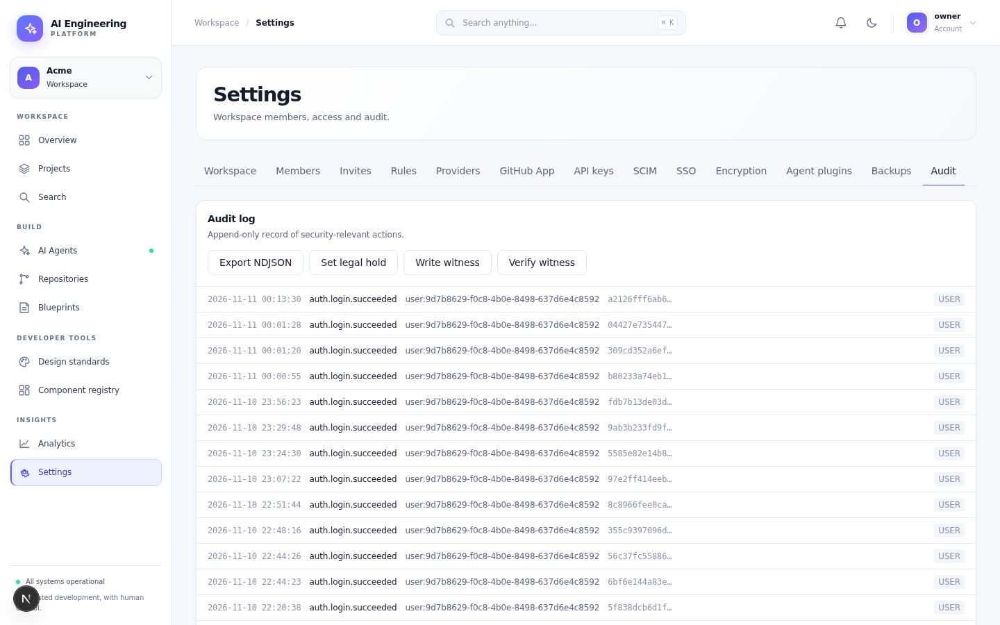

Security and audit
The model is not the security boundary. The runtime, the approval gates and the audit trail are.
Sandbox isolation
Every agent run executes in a disposable container:
- read-only root filesystem
- writable workspace on tmpfs
- all Linux capabilities dropped
- no new privileges
- no network by default; approved egress only
- CPU, memory and process limits
- host filesystem never mounted
A run cannot read another run's workspace or the host's credentials.
Code and data handling
- Repository contents are cloned into the sandbox for the run.
- Artifacts (plan, diff, test report, review) are stored in object storage and linked to the run.
- Provider requests contain only the context the run needs; prompt content and secrets are not written to logs or telemetry.
- Deleting a project removes its tasks, runs, repositories and incidents; audit records follow the retention policy.
Audit trail

Append-only audit events with export, legal hold and witness verification.
The audit log records security-relevant actions:
- sign-in and sign-out
- membership and role changes
- approvals and overrides
- provider, SSO, SCIM and API key changes
- backup and restore requests
- policy and rule changes
Audit entries are append-only. Owners and admins can export NDJSON for a SIEM, place a legal hold, or verify the witness chain.
Access controls
- Workspace roles and project-level access
- SSO enforcement and session revocation
- scoped API keys
- provider credentials encrypted at rest
- BYOK envelope encryption for organisations that require their own key
Reporting a concern
Contact the workspace owner or the platform operator with the run ID, the timestamp and the affected project. Do not paste secrets or customer data into a ticket.